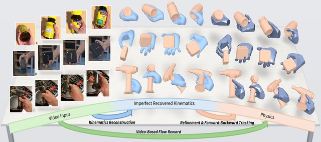

PERFORM: Physically Executable Hand-Object Interaction Reconstruction from Monocular Manipulation Videos
Ziyuan Xia, Yan Xia, Qixing Huang, Georgios Pavlakos
Under Review, 2026
We present PERFORM, a full-stack framework that reconstructs physically executable hand-object interactions from a monocular RGB video.